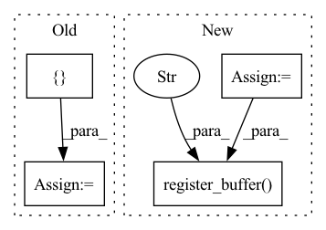

Pattern ID :3446
Before Change
self.rank = rank
if len(empty_idx) == 0:
empty_idx = [ self.rank + 1 = empty_idx
self.param_rank = len([i for i in range(self.rank) if i not in self.empty_idx])
self._set_params(method, init_diag_multi)After Change
assert all(isinstance(x, int) for x in empty_idx)
self.param_rank = self.rank - len(empty_idx)
mask = torch.zeros((self.rank, self.param_rank))
c = 0
for r in range(self.rank):
if r not in empty_idx:
mask[r, c] = 1.
c += 1
self.register_buffer("mask" , mask)
self._set_params(method, init_diag_multi)
self.var_predict_module = predict_varianceIn pattern: SUPERPATTERN
Frequency: 3
Non-data size: 4
Instances Fragment ID: 13244862
Project Name: strongio/torchcast
Commit Name: 8880c7a14cf77655f500f452fcc29cf2825c4422
Time: 2021-07-11
Author: jacob.dink@strong.io
File Name: torchcast/covariance/base.py
M Class Name: Covariance
N Class Name: Covariance
M Method Name: __init__(7)
N Method Name: __init__(7)
M Parent Class: nn.Module
N Parent Class: nn.Module
M File Name: torchcast/covariance/base.py
N File Name: torchcast/covariance/base.py
M Start Line: 154
M End Line: 160
N Start Line: 154
N End Line: 165
Before Change
pad_size = [get_padding(filt_size, stride, dilation=1)] * 4
self.padding = nn.ReflectionPad2d(pad_size)
self._coeffs = torch.tensor((np.poly1d((0.5, 0.5)) ** (self.filt_size - 1)).coeffs) // for torchscript compat
self.filt = {} // lazy init by device for DataParallel compat
def _create_filter(self, like: torch.Tensor):
blur_filter = (self._coeffs[:, None] * self._coeffs[None, :]).to(dtype=like.dtype, device=like.device)After Change
self.stride = stride
self.padding = [get_padding(filt_size, stride, dilation=1)] * 4
coeffs = torch.tensor((np.poly1d((0.5, 0.5)) ** (self.filt_size - 1)).coeffs.astype(np.float32))
blur_filter = (coeffs[:, None] * coeffs[None, :])[None, None, :, :].repeat(self.channels, 1, 1, 1)
self.register_buffer("filt" , blur_filter, persistent=False)
def forward(self, x: torch.Tensor) -> torch.Tensor:
x = F.pad(x, self.padding, "reflect")
return F.conv2d(x, self.filt, stride=self.stride, groups=x.shape[1]) Fragment ID: 13244866
Project Name: feng-lab/pytorch-image-models
Commit Name: 0d87650fea5ce607d07204806e8143a48917d96f
Time: 2021-05-04
Author: rwightman@gmail.com
File Name: timm/models/layers/blur_pool.py
M Class Name: BlurPool2d
N Class Name: BlurPool2d
M Method Name: __init__(4)
N Method Name: __init__(4)
M Parent Class: nn.Module
N Parent Class: nn.Module
M File Name: timm/models/layers/blur_pool.py
N File Name: timm/models/layers/blur_pool.py
M Start Line: 40
M End Line: 43
N Start Line: 32
N End Line: 38
Before Change
_js = sorted(list(_js))
self._coeff = {}
self._js_restriction = {}
for _j in _js:
Y_size = _G.irrep(*_j).size
coeff = [After Change
self._js_restriction = {}
self._dim_harmonics = {}
_coeffs = {}
dim = 0
for _j in _js:
Y_size = _G.irrep(*_j).size
coeff = [
torch.einsum(
// "nmsM,kNM,NYt->nmkstY",
"nmsi,kji,jyt->nmksty",
torch.tensor(G._clebsh_gordan_coeff(self.n, self.m, j), dtype=torch.float32),
torch.tensor(G.irrep(*j).endomorphism_basis(), dtype=torch.float32),
torch.tensor(id_coeff, dtype=torch.float32),
).reshape((out_irrep.size, in_irrep.size, -1, Y_size))
for j, id_coeff in _js_restriction[_j]
]
_coeffs[_j] = torch.cat(coeff, dim=2)
self._js_restriction[_j] = [(j, id_coeff.shape[2]) for j, id_coeff in _js_restriction[_j]]
self._dim_harmonics[_j] = _coeffs[_j].shape[2]
dim += self._dim_harmonics[_j] * self.basis.multiplicity(_j)
super(RestrictedWignerEckartBasis, self).__init__(basis, in_irrep, out_irrep, dim)
for b, _j in self.js:
self.register_buffer(f"coeff_{b}" , _coeffs[_j])
def coeff(self, idx: int) -> torch.Tensor:
return getattr(self, f"coeff_{idx}")
Fragment ID: 13244865
Project Name: quva-lab/escnn
Commit Name: 0f92512786f1d6658e6b9796043bedf457c0558b
Time: 2022-08-26
Author: gabriele.cesa@gmail.com
File Name: escnn/kernels/wignereckart_solver.py
M Class Name: RestrictedWignerEckartBasis
N Class Name: RestrictedWignerEckartBasis
M Method Name: __init__(5)
N Method Name: __init__(5)
M Parent Class: IrrepBasis
N Parent Class: IrrepBasis
M File Name: escnn/kernels/wignereckart_solver.py
N File Name: escnn/kernels/wignereckart_solver.py
M Start Line: 295
M End Line: 374
N Start Line: 266
N End Line: 352